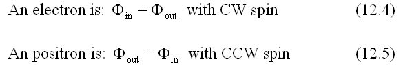

On page 143 of Milo Wolff's book "Schrodinger's Universe" he writes: "Superposition
of an inward wave and an outward wave produces a standing wave called a
space resonance (SR), and can be done in two ways to form either an electron
or a positron. At the center the inward wave undergoes a rotary phase-reversal,
transforming it to the outward wave. This phase-reversal can also happen in two
ways; two types of spherical rotation, CW or CCW. One is the electron, the other
the positron, with opposite spins:

On page 152, M.W. writes: "The required phase shift is a 720° rotation that changes inward wave amplitudes to become those of outward wave. There are only two possible directions of rotation, CW or CCW. One direction produces an electron with spin of h/4π, and the other is the positron with spin of -h/4π."
With respect to what is CW and CCW to be defined? Exactly how are spherical rotations used to define the electron and positron?
I assume that the CW and CCW refers to two distinct spherical rotations. So, let's see if we can find them.
Here is an animation of the spherical rotation. (Check my "spherical rotations" page if you don't understand this motion.)
Figure 1
(Don't get confused. As mentioned on my spherical rotation page, each orientation/click-stop of the animation is showing a DIFFERENT set of stream-lines. An individual stream-line does not have this motion as the center sphere rotates.)
The x-axis is blue, the y-axis is yellow, the z-axis is red. The stream-lines in a plane are purple and the funnel stream-lines are green. The center sphere is gray and has a red ring around it to indicate the plane of rotation. The direction of rotation of the sphere is given by two cones, one white and one blue. If you watch closely, you will see that a cone (and hence the center sphere) rotations 720° while the stream-lines rotate through 360°.
Perhaps the "CW" and "CCW" motion that M.W. mentions means that the center sphere is rotated in the opposite direction. Here is that animation.
Fiugre 2
Note that the stream-lines still have their "CW, CCW" orientation. That is, starting with all stream-lines unstretched/twisted, the ball is rotated 180° CCW about the x-axis. Only the center ball's rotation is changed.
But this doesn't really change the motion! That is, I can rotation the entire structure to get the original motion. (Or, rotate my point of view to get the same motion as shown in the first animation.)
Figure 3
As you can see, the blue cone, indicating the direction that the center sphere is to be rotated, is initially pointing as in animation #2. After rotating the entire structure, it is pointing in the direction as in animation #1 and the stream-line's have not changed their orientation.
So, the two "different" motions are actuall the same motion, just view from a different angle.
From an spherical point of view (there is no prefered direction in space) one point of view is just a good as another.
So, we have not found a unique aspect of the spherical rotation motion which we can label as "CW" and "CCW".
If you have a different way to figure out what MW means by "CW" and "CCW" w.r.t. spherical rotation, please let me know. I am eager to do an animation of it!
Usage Note: My work is copyrighted. You may reference and use my work in non-profit projects but you may not include my work, or parts of it, in any for-profit project without my consent.